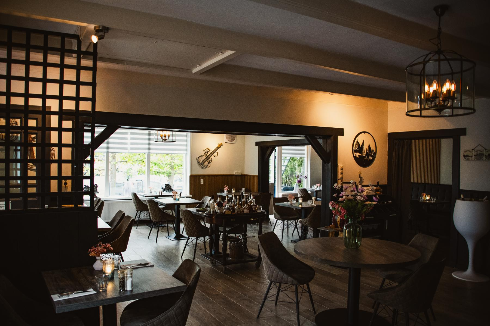
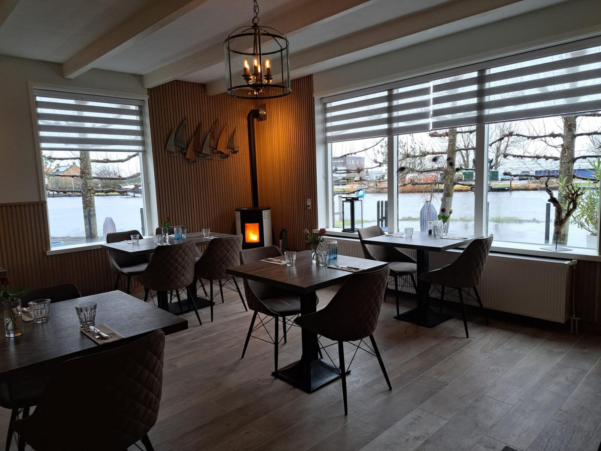
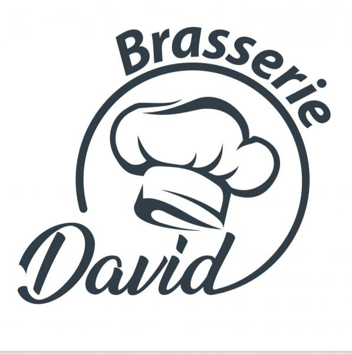
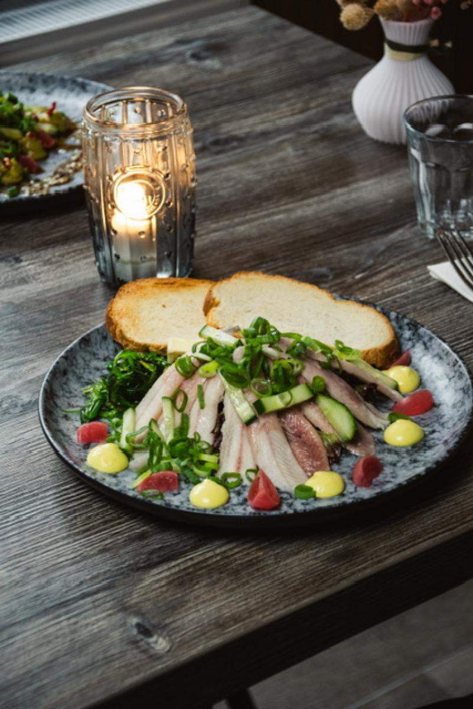
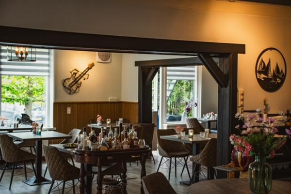
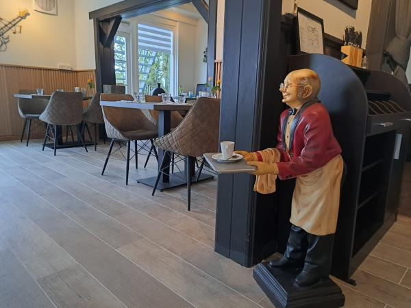
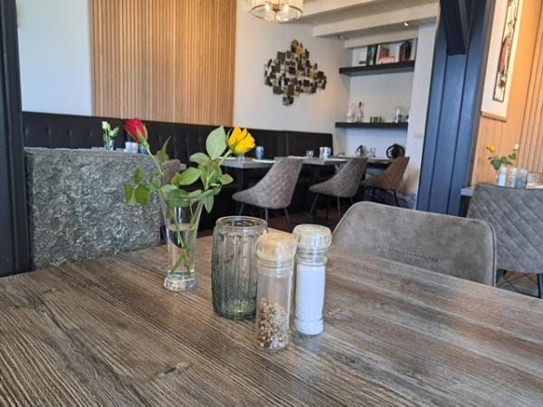
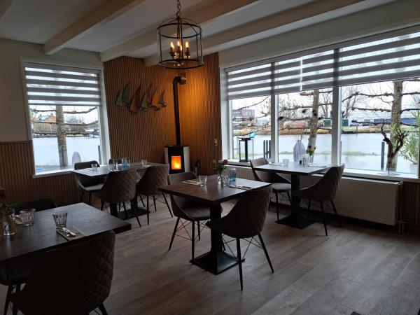

Kerstlunch
€ 44,50
- Vis hors-d’oeuvrezalm, gerookte paling en garnalen
- Hertenbiefstukpommes dauphines, Provençaalse groenten en rodewijnsaus
- Stoofpeerkaneelroomijs, vanille crumble en slagroom

Pontweg 28, Aalsmeer
Lunch, borrel en diner op een historische plek aan het einde van de Pontweg, met uitzicht op de Ringvaart. Internationale gerechten met een Franse basis.
Ook dit jaar weer een kerstmenu. Lunch € 44,50 en diner € 62,50.
Bekijk het kerstmenu
Brasserie David bevindt zich aan het einde van de Pontweg in Aalsmeer, op een prachtige historische locatie met uitzicht op de Ringvaart. Onze deuren staan open voor lunch, borrel en diner. Bij gunstig weer serveren wij met plezier op ons sfeervolle terras.
Onze keuken is gespecialiseerd in internationale gerechten met een basis in de Franse culinaire traditie. Die Franse culinaire erfenis is van generatie op generatie doorgegeven in de familie van David.
David Sargis, de patron-cuisinier, stond al op jonge leeftijd naast zijn vader in de keuken van het familierestaurant, op dezelfde plek waar nu zijn eigen brasserie zit. Op zijn zestiende begon hij aan de koksopleiding aan het ROC van Amsterdam, die hij met niveau twee en drie afrondde. In die tijd deed hij ervaring op bij diverse gerenommeerde bedrijven op hoog culinair niveau.
Sinds september 2020 is David met trots de eigenaar van Brasserie David. Samen met zijn team wil hij u een plezierige, gezellige en vooral smakelijke eetervaring bieden.

David SargisGerechten voor internationale smaken, maar met een Franse basis.
Heeft u een allergie of dieetwens? Meld het bij uw reservering.
Ook dit jaar hebben wij weer een prachtig kerstmenu voor u gemaakt. Heeft u wensen? Laat het ons weten.
Let op: op 24 december en van 27 december t/m 7 januari 2027 zijn wij gesloten.
Reserveer voor kerstLiever de originele kaart? Kerstlunch (pdf) en kerstdiner (pdf)
€ 44,50
€ 62,50





Wij ontvangen u graag met open armen, binnen of op ons terras. Wij zijn geopend van dinsdag t/m zondag van 11.30 tot 21.30 voor een lunch, borrel of diner. Onze keuken sluit om 21.00 uur.
Geef bij uw reservering graag uw naam, telefoonnummer en het aantal personen door. Eventuele allergieën of dieetwensen horen wij ook graag.
Reserveren voor dezelfde dag kan alleen telefonisch.
Mail een reserveringUw reservering wordt persoonlijk per mail bevestigd.
| Maandag | Gesloten |
|---|---|
| Dinsdag | 11.30 - 21.30 |
| Woensdag | 11.30 - 21.30 |
| Donderdag | 11.30 - 21.30 |
| Vrijdag | 11.30 - 21.30 |
| Zaterdag | 11.30 - 21.30 |
| Zondag | 11.30 - 21.30 |
De keuken is open tot 21.00 uur. Gesloten op 24 december en van 27 december t/m 7 januari 2027.